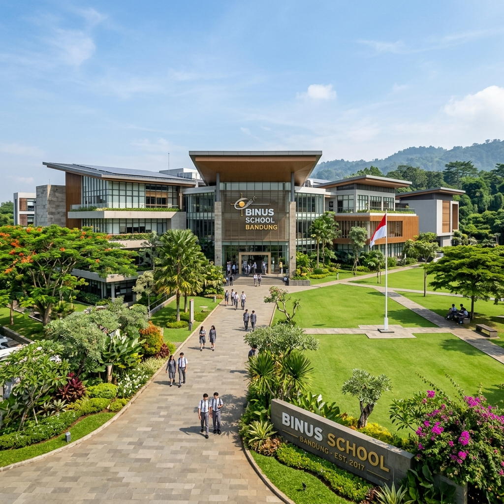
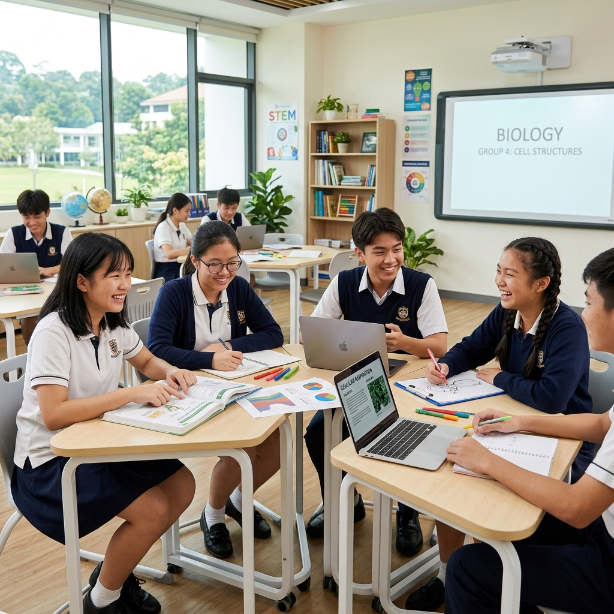
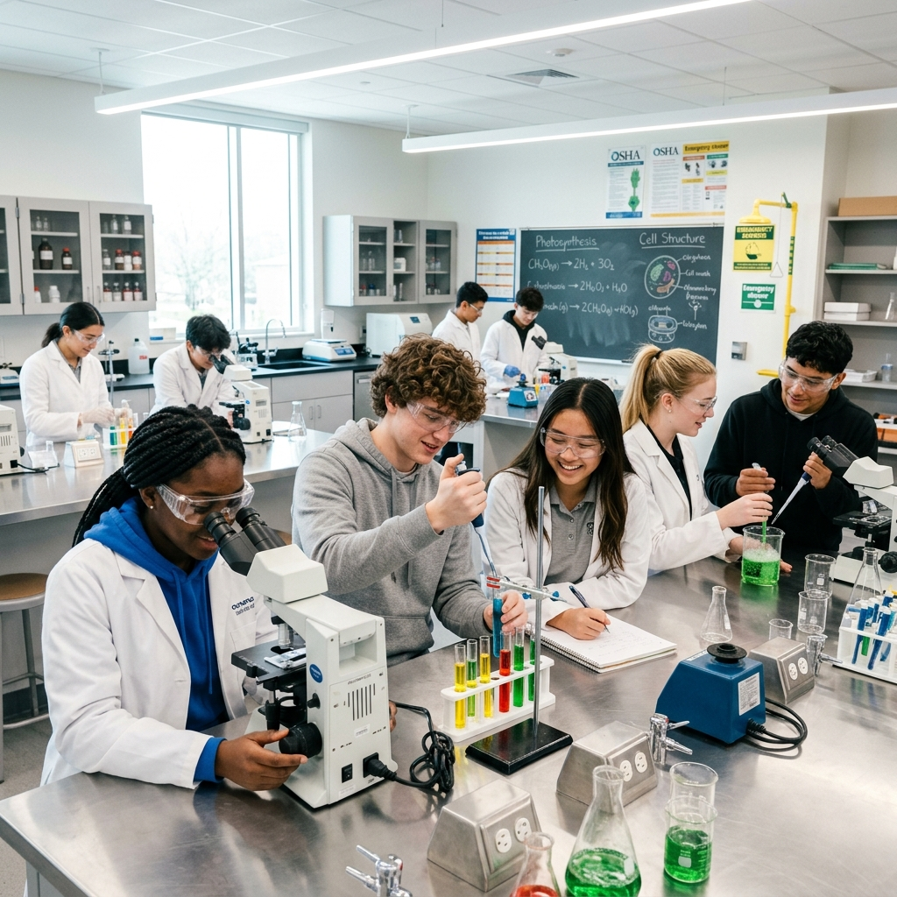
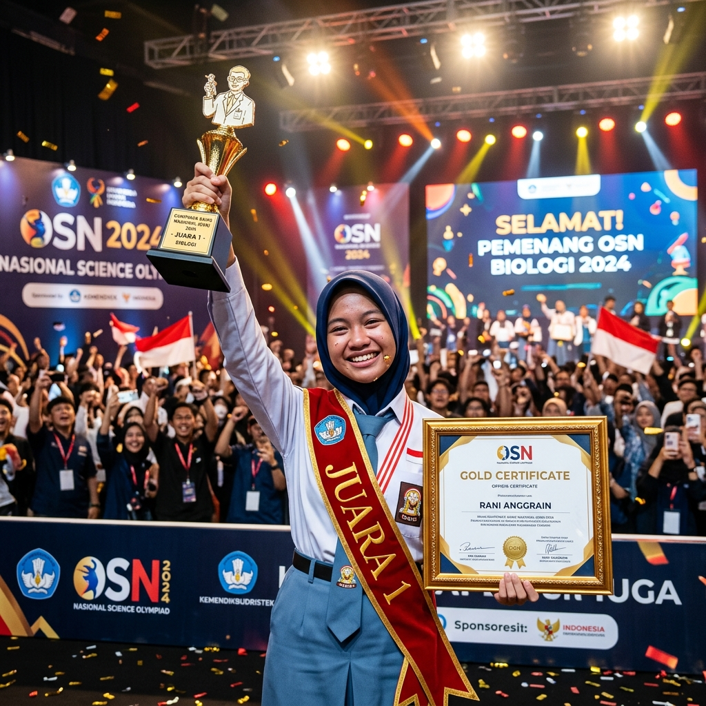
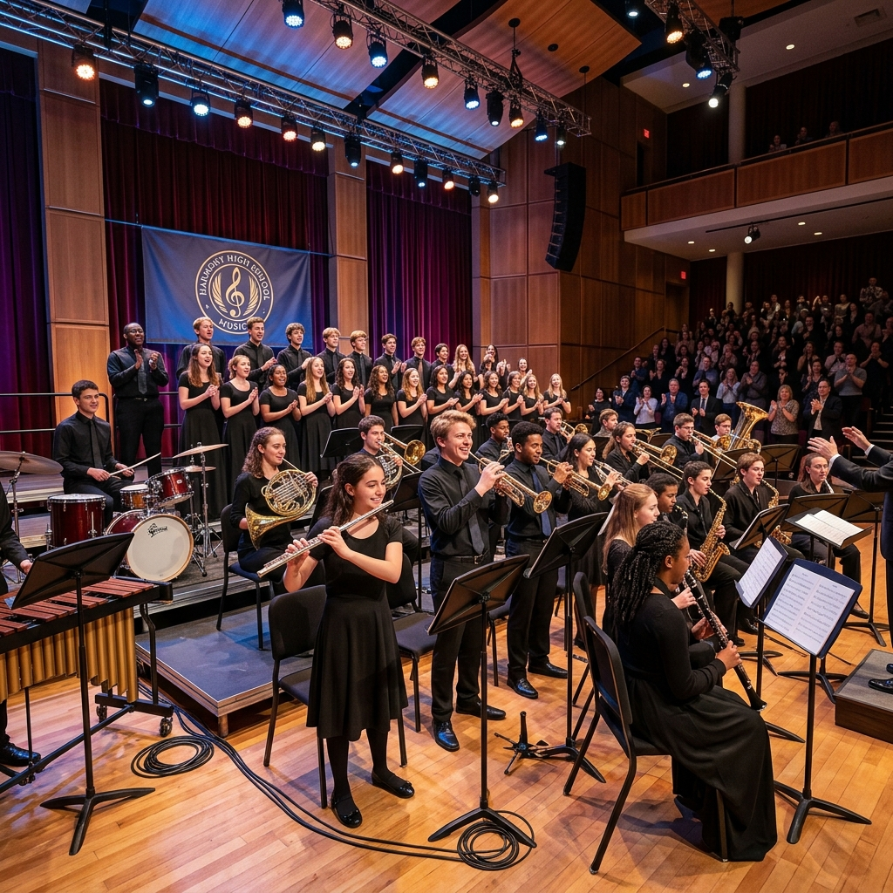

Membentuk Generasi Unggul, Berkarakter, dan Berdaya Saing Global. Daftarkan diri Anda di salah satu sekolah terbaik bangsa.

Simak tanggal penting registrasi, seleksi berkas, dan pengumuman kelulusan.
Lihat JadwalPelajari kuota pendaftaran jalur zonasi, prestasi, afirmasi, dan tugas orang tua.
Pelajari Jalur"Menjadi sekolah unggul yang menghasilkan insan bertaqwa, berakhlak mulia, cerdas, berkarakter kuat, berbudaya lingkungan, dan mampu bersaing secara global."


SMA Negeri 2 Bandung berdiri kokoh sebagai mercusuar pendidikan berkualitas di Jawa Barat, mendidik pemimpin masa depan berakhlak mulia.
Kami memadukan pengajaran kurikulum modern berbasis sains dan teknologi dengan penanaman nilai moral luhur Sunda. Fasilitas belajar yang premium, lingkungan asri, serta guru berdedikasi tinggi siap mendampingi putra-putri Anda.
Didirikan resmi sebagai bagian dari pilar sekolah menengah negeri di Bandung.
Meraih predikat Rintisan Sekolah Bertaraf Internasional (RSBI) unggulan.
Mengimplementasikan digitalisasi ekosistem sekolah mandiri berdaya saing global.
Pahami alur penerimaan, jalur kuota, dokumen prasyarat, dan jawaban atas pertanyaan umum sebelum Anda memulai pendaftaran.
Pendaftaran dibagi menjadi 4 jalur resmi dengan persentase kuota khusus:
Persiapkan dokumen dalam format PDF/JPG berukuran maks 1MB:
Hasil kelulusan seleksi administrasi dan kelulusan final akan diumumkan secara transparan melalui portal resmi ini pada akun masing-masing peserta sesuai kalender PPDB Jawa Barat.
Ikuti tahapan seleksi penerimaan murid baru sesuai urutan jadwal agar pendaftaran Anda berjalan lancar tanpa kendala administrasi.
Calon peserta didik membuat akun pendaftaran secara mandiri di portal resmi PPDB Provinsi Jawa Barat / SMAN 2 Bandung. Pada tahap ini, peserta wajib mengisi biodata diri lengkap, koordinat domisili tempat tinggal berdasarkan GPS, nilai rapor semester 1 sampai 5, serta mengunggah dokumen administrasi scan berkas persyaratan asli.
Panitia SPMB SMAN 2 Bandung melakukan validasi fisik dan administrasi atas berkas yang diunggah peserta. Khusus pendaftar jalur prestasi kejuaraan non-akademik, peserta diwajibkan menghadiri seleksi uji kelayakan bakat (olahraga/seni/olimpiade) di sekolah dengan membawa dokumen fisik sertifikat/piagam asli.
Pengumuman kelulusan final calon siswa baru yang lolos seleksi dapat diakses secara daring melalui situs web ini atau portal dinas pendidikan Jawa Barat mulai pukul 08:00 WIB. Keputusan panitia bersifat mutlak dan tidak dapat diganggu gugat. Pendaftar yang lolos diwajibkan mencetak bukti kelulusan untuk pendaftaran ulang.
Calon siswa baru yang dinyatakan diterima wajib melapor diri secara langsung ke panitia PPDB SMAN 2 Bandung. Persiapkan berkas fisik asli beserta salinannya (fotokopi terlegalisir) guna pencocokan data profil siswa. Kegagalan melakukan daftar ulang sesuai jadwal yang ditentukan dianggap mengundurkan diri.
Berikut jawaban atas pertanyaan-pertanyaan yang paling sering ditanyakan oleh calon siswa dan orang tua.
Ikuti perkembangan terbaru mengenai program sekolah, kegiatan akademik, prestasi siswa, dan pembaruan seputar SPMB 2026.

PrestasiPerwakilan tim sains kami berhasil merebut medali emas dalam kompetisi Fisika Nasional yang diadakan di Universitas Indonesia...
Baca SelengkapnyaSMAN 2 Bandung mulai menerapkan sistem pembelajaran digital interaktif penuh untuk kelas 10 guna mendukung penguasaan sains digital...
Baca SelengkapnyaPanitia menyelenggarakan webinar terbuka membahas tuntas cara pendaftaran dan verifikasi titik lokasi zonasi pendaftar...
Baca SelengkapnyaFasilitas lab IPA sekolah kami resmi memperoleh sertifikasi kelayakan peralatan modern dari Dinas Laboratorium Daerah...
Baca SelengkapnyaKilas balik keseruan aktivitas, lingkungan kelas, olahraga, pentas seni, dan hari kelulusan murid SMAN 2 Bandung.

Dengarkan kisah sukses alumni, pandangan orang tua murid, dan pengalaman belajar aktif langsung dari siswa-siswi kami.
Kunjungi sekretariat panitia atau hubungi nomor layanan helpdesk kami untuk mendapatkan penjelasan teknis lebih lanjut.
SMA Negeri 2 Bandung diresmikan pertama kali pada akhir dasawarsa 1950-an. Sekolah ini menempati area strategis di kawasan bersejarah Jl. Cihampelas, Bandung. Sejak awal pendiriannya, sekolah ini dikenal memiliki integritas akademik yang kokoh serta disiplin tinggi. Banyak mencetak lulusan berprestasi nasional yang melanjutkan studi di perguruan tinggi ternama seperti ITB, Unpad, UI, dan UGM, serta institusi global di luar negeri.
Sekolah menerapkan falsafah Sunda *Silih Asih, Silih Asah, Silih Asuh* yang dipadukan dengan wawasan literasi sains modern. Kami percaya pendidikan sejati adalah yang memupuk intelek siswa sekaligus mengasah empati kemanusiaan mereka.
SMAN 2 Bandung saat ini menyandang predikat Akreditasi A (Sangat Baik / Unggul) dari Badan Akreditasi Nasional. Sekolah juga mendapat penghargaan sebagai Sekolah Adiwiyata (Peduli Lingkungan) dan Sekolah Pelopor Digitalisasi Pendidikan Provinsi Jawa Barat.